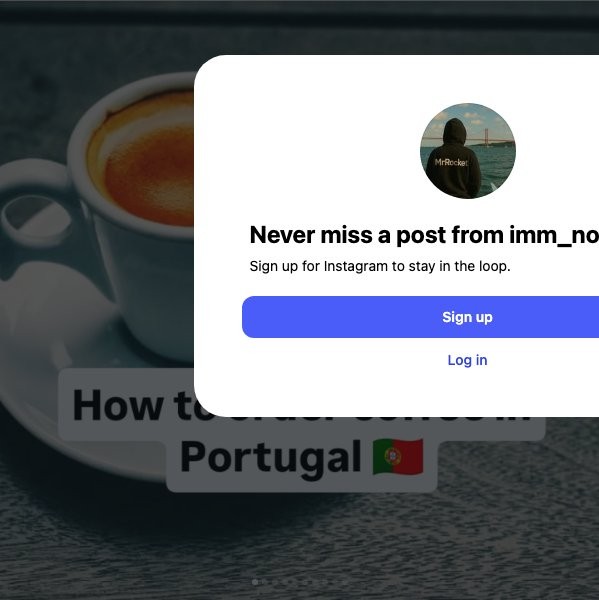
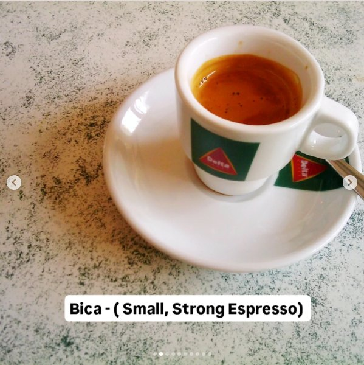
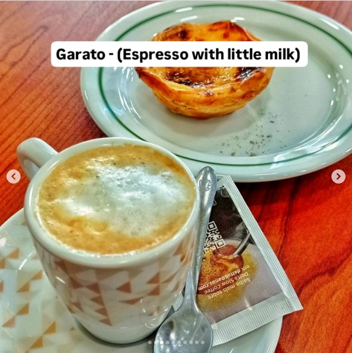
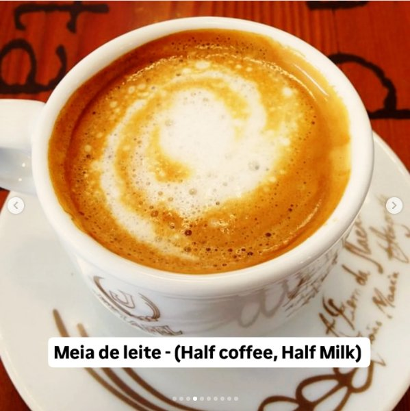
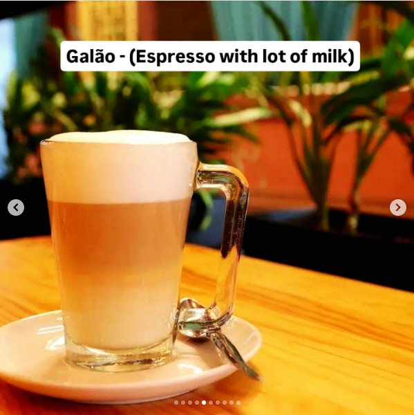
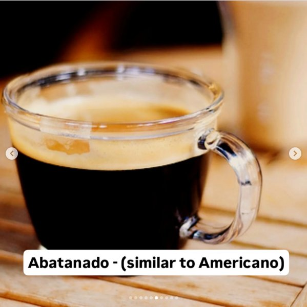
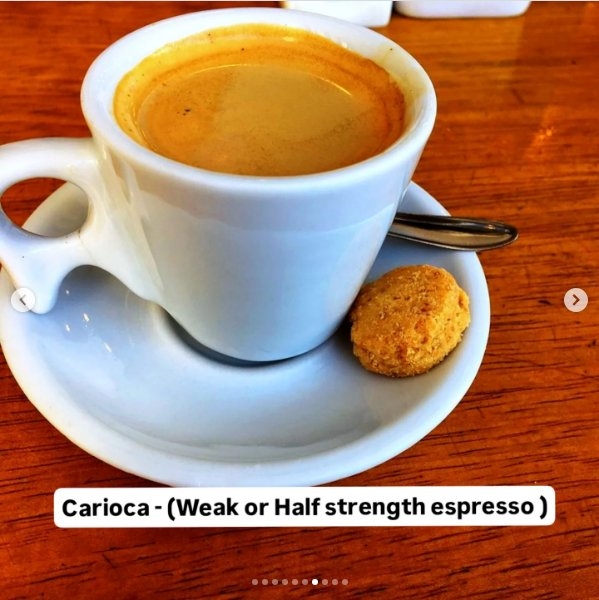
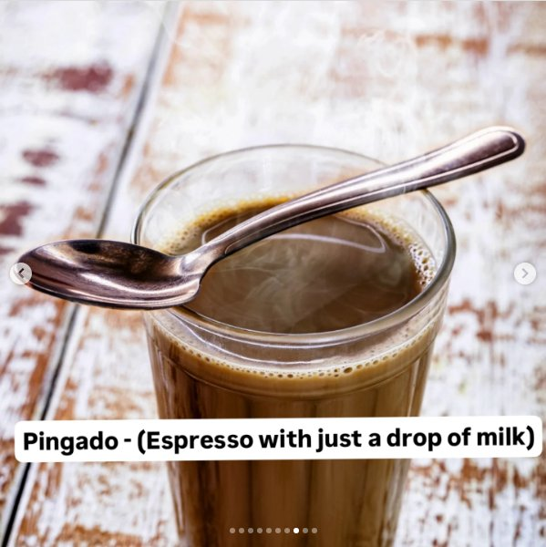
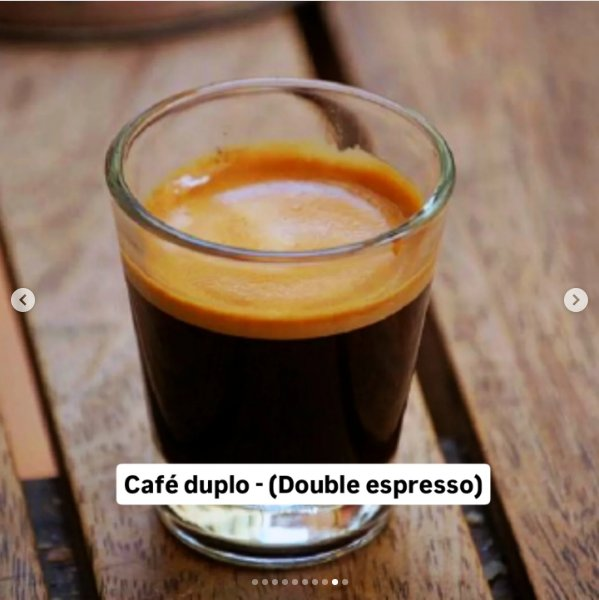
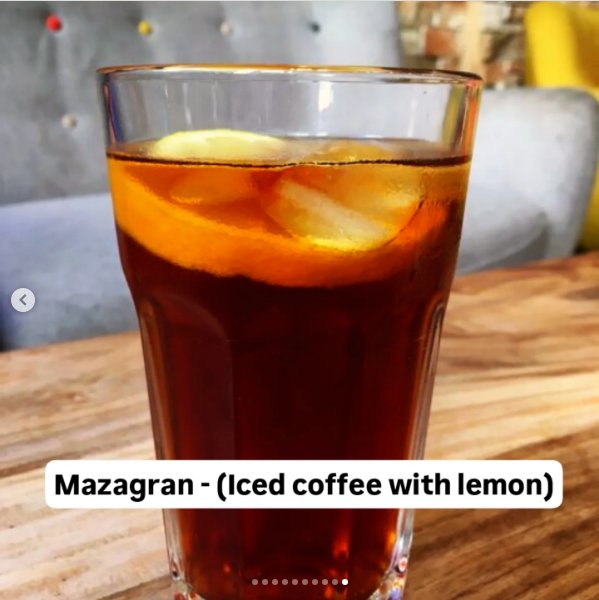

Instagram Post

Boost your coffee knowledge in Portugal! ☕🇵🇹...
carousel (10 slides) (enriched by ClaudeClaw)
Summary
How to order coffee in Portugal | How to order coffee in Portugal 🇵🇹 | Delta Delta Bica - ( Small, Strong Espresso) | Garato - (Espresso with little milk) Saiba mais sobre Del... | Meia de leite - (Half coffee, Half Milk) | Galão - (Espresso with lot of milk) | Abatanado - (similar to Americano) | Carioca - (Weak or Half strength espresso ) | Pingado - (Espresso with just a drop of milk) | Ca...
Caption
Boost your coffee knowledge in Portugal! ☕🇵🇹 From bica to galão, learn the lingo and impress the locals!
Follow @imm_nobudy for more tips and recommendations from Portugal 🇵🇹
#portugal #portuguesecoffee #travelportugal #lisbon #cafeculture #wanderlust #porto #algarve #coffeelovers #traveldiaries #caffeineaddict #café #bica #americano #pingado #galão #travelingram #foodporn #fypage #foryou #fypreels #fyp
1
How to order coffee in Portugal
A white espresso cup filled with coffee and a saucer rests on a dark grey wooden table.
2
How to order coffee in Portugal 🇵🇹
A small white cup of espresso coffee with a white saucer rests on a dark grey, textured surface.
3
Delta Delta Bica - ( Small, Strong Espresso)
A small white cup filled with espresso sits on a matching saucer with a spoon, all placed on a speckled table.
4
Garato - (Espresso with little milk) Saiba mais sobre Delta Slow Coffee em delta60anos.com
A cup of coffee with foam, a spoon, a sugar packet, and a pastry on a white plate are arranged on a wooden table.
5
Meia de leite - (Half coffee, Half Milk)
A close-up shot shows a white cup of coffee with a swirl of milk foam on top, sitting on a white saucer, against a reddish-brown wooden background.
6
Galão - (Espresso with lot of milk)
A clear glass mug containing a layered coffee drink with foam on top is placed on a white saucer with a spoon, all resting on a wooden table with blurred green plants in the background.
7
Abatanado - (similar to Americano)
A clear glass mug filled with dark coffee and crema sits on a light wooden surface, with another blurry light-colored cup in the background.
8
Carioca - (Weak or Half strength espresso )
A white cup of espresso with crema sits on a white saucer with a small spoon and a golden-brown cookie, all placed on a wooden table.
9
Pingado - (Espresso with just a drop of milk)
A clear glass filled with a steaming coffee drink, with a spoon resting across the rim, is shown on a light-colored wooden surface.
10
Café duplo - (Double espresso)
A clear glass filled with dark coffee topped with orange-brown crema sits on a wooden surface.
All slides








